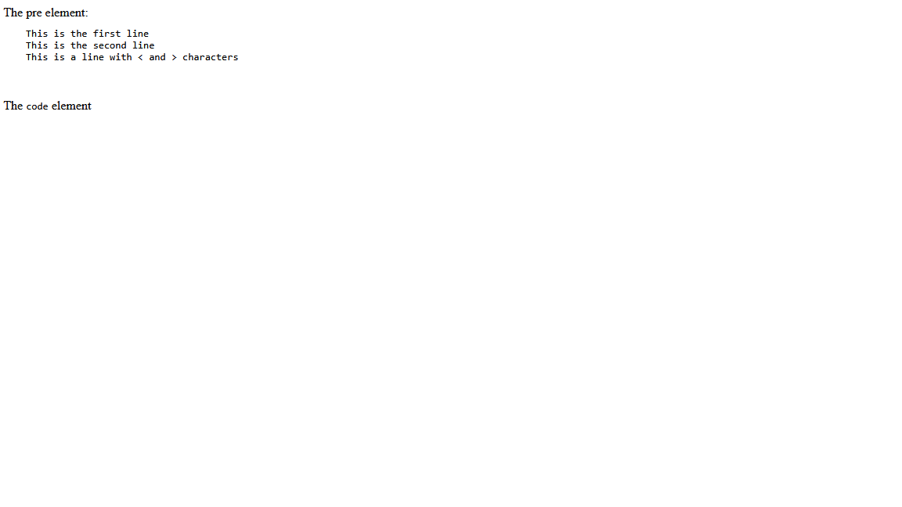
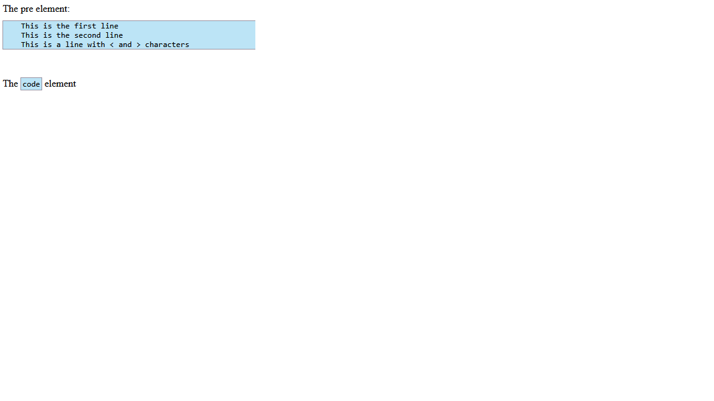

Home
Categories
Dictionary
Download
Project Details
Changes Log
What Links Here
How To
Syntax
FAQ
License
Code, pre and source background
1 Code and source elements
2 Pre elements
3 Examples
3.1 Example without backgrounds
3.2 Example with backgrounds
4 See also
2 Pre elements
3 Examples
3.1 Example without backgrounds
3.2 Example with backgrounds
4 See also
Code and source elements
By default code and source elements do not have any background.If the command-line codeHasBackground option or the configuration codeHasBackground option is set to true, these elements will have a background similar to the code background in Wikipedia.
Alternatively, the "background" attribute on a code and source element allows to specify it for one of these elements only. The possible values are:
- "true": the element will have a background regardless of the value of the "codeHasBackground" option
- "false": the element will not have a background regardless of the value of the "codeHasBackground" option
- "default": the element will have a background as specified by the value of the "codeHasBackground" option (same as if the attribute is not present)
Pre elements
By default pre elements do not have any background nor border, except if the "boxed", "border", or "color" attributes are used.If the command-line preHasBackground option or the configuration preHasBackground option is set to true, these elements will have a background similar to the code background in Wikipedia.
Alternatively, the "background" attribute on a pre element allows to specify it for one of these elements only. The possible values are:
- "true": the element will have a background regardless of the value of the "preHasBackground" option
- "false": the element will not have a background regardless of the value of the "preHasBackground" option
- "default": the element will have a background as specified by the value of the "preHasBackground" option (same as if the attribute is not present)
preHasBackground property will not have any effect on this element.
Examples
The two following examples show the result of the following "pre" and "code" elements:The pre element: <pre> This is the first line This is the second line This is a line with < and > characters </pre> The <code>code</code> element
Example without backgrounds

Example with backgrounds

See also
×

Categories: Syntax